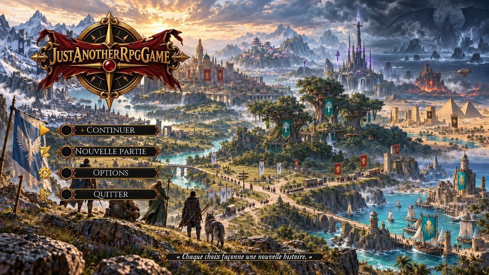
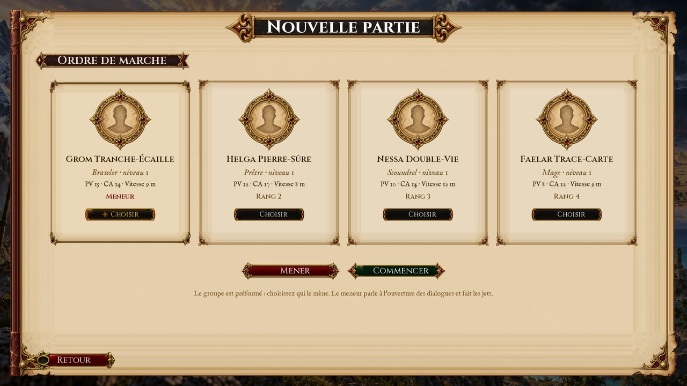
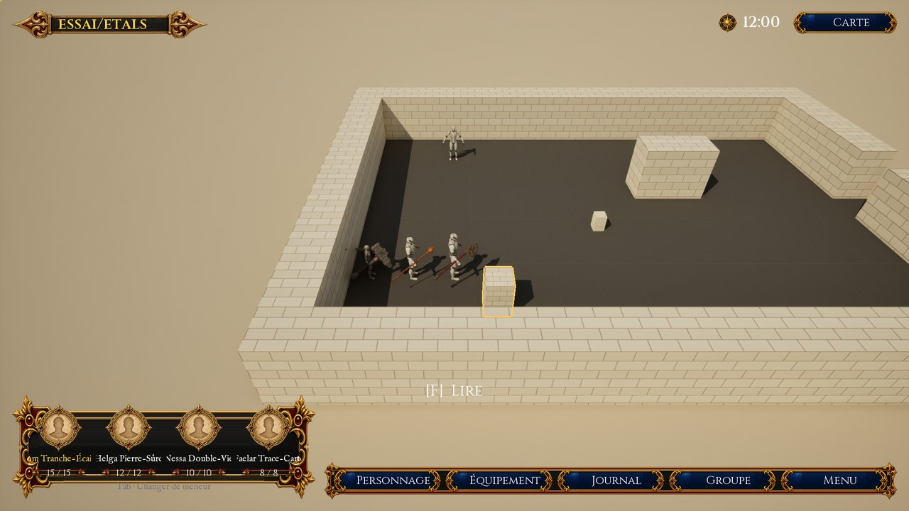
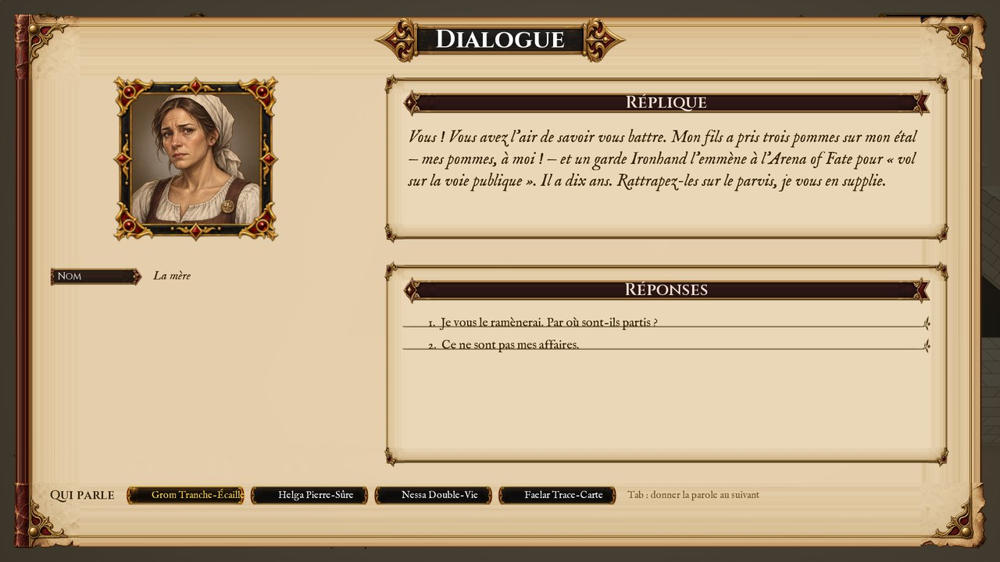
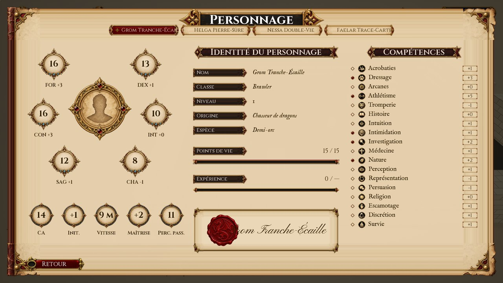
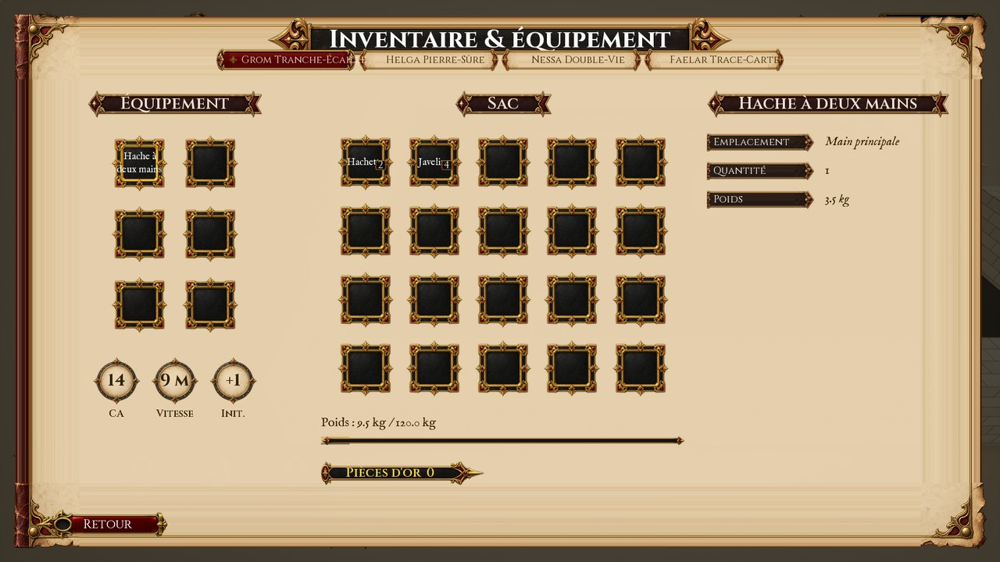
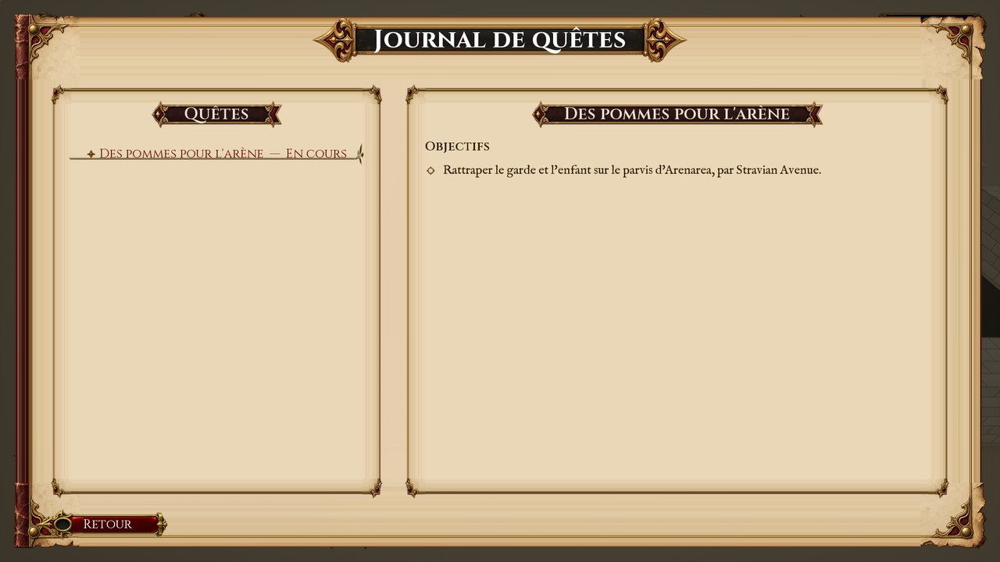
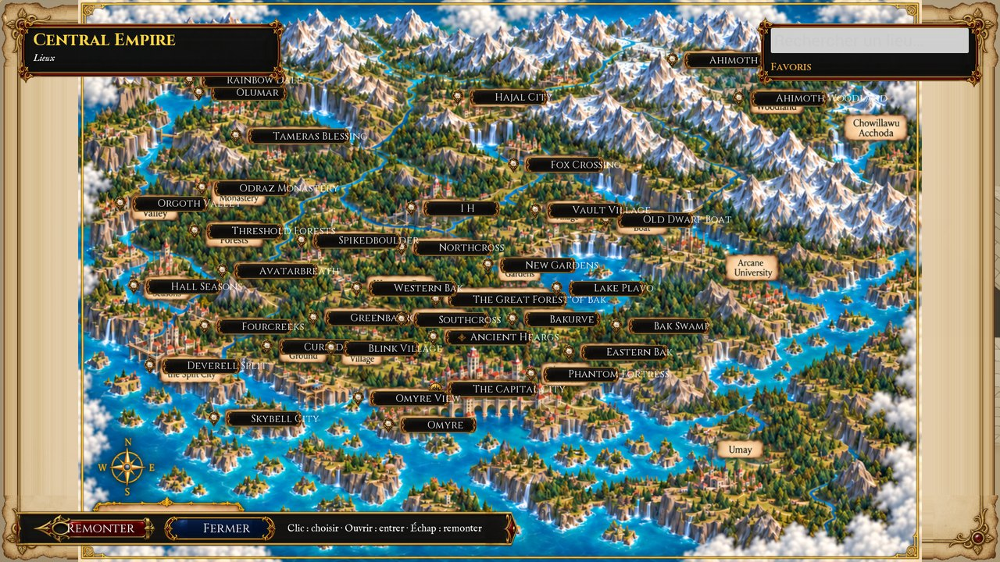
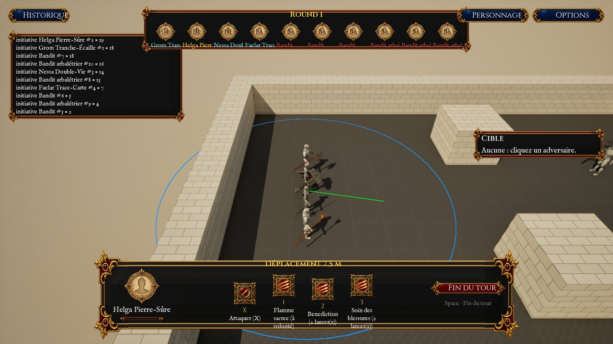
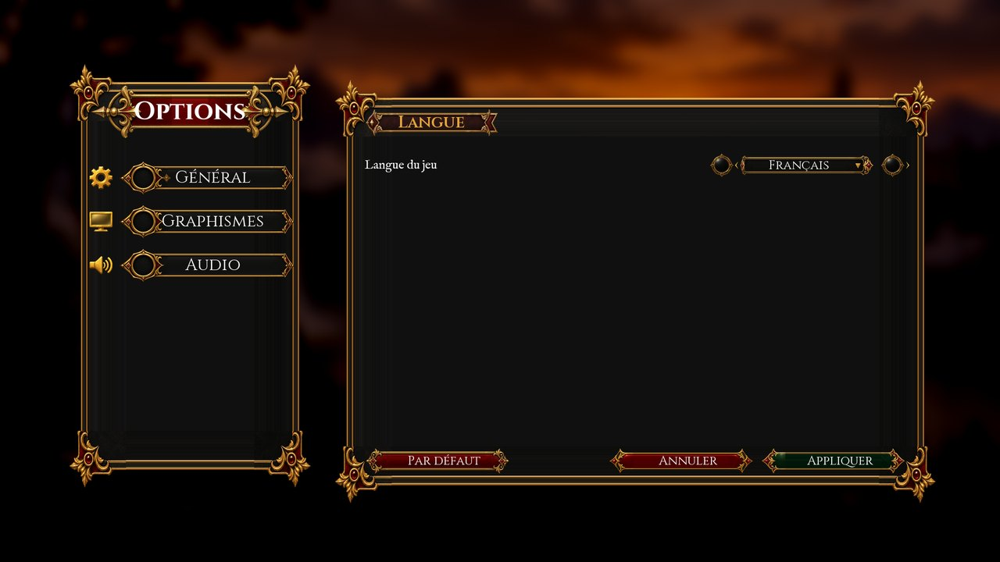

Manuel du joueur
Just Another RPG Game, version 0.0.3 — la démonstration de l'Arena of Fate. Ce manuel dit comment jouer ; les règles elles-mêmes sont dans le guide des règles. Ses captures sont celles du tour des écrans (scripts/build.ps1 -Unreal -Ecrans, LOT-1020), prises sur les cartes d'essai : elles se régénèrent avec le jeu.
Commencer


Le jeu s'ouvre sur le menu du titre. Nouvelle partie ouvre le groupe : la compagnie est préformée — un bagarreur, une prêtresse, une roublarde, un mage (D-28) — et vous choisissez qui la mène (D-37). Le meneur parle le premier à l'ouverture d'un dialogue et fait les jets.


Explorer


- Marcher : un clic gauche au sol mène le groupe ; sur un personnage, le meneur va lui parler.
- Interagir :
Fsollicite ce que le meneur a à portée ; l'invite au bas de l'écran le dit. - La caméra :
AetEla tournent,RetVl'inclinent, la molette la rapproche,ZQSDou les flèches déplacent le regard ;Cou le clic droit tenu la tournent à la souris ;Débutla ramène sur le meneur. - Le meneur :
Tabpasse la main au suivant du groupe.
Parler


Les réponses se donnent au clic ou par leur chiffre (1 à 6). Une réponse qui annonce une compétence et un degré de difficulté lance un jet : son résultat s'écrit sous le nom de l'interlocuteur. Qui parle pour le groupe se choisit en bas de la page, ou par Tab : celui qui parle jette les dés avec ses propres modificateurs (D-28).
Les écrans
| Écran | Touche | Ce qu'il montre |
|---|---|---|
| Personnage | P | les caractéristiques, l'identité, les points de vie, l'expérience, les compétences |
| Équipement | I | ce que le membre porte, son sac, sa charge, sa bourse |
| Journal | J | les quêtes commencées, leur état, les étapes atteintes |
| Groupe | G | l'ordre de marche : choisir un membre, le mener, l'avancer, le reculer |
| Carte | M | l'atlas illustré du monde, ses régions et ses lieux |
| Menu | Échap | reprendre, les options, le retour au titre, quitter |
La même touche ouvre et referme un écran ; dans un écran, les flèches et Tab passent d'un bouton à l'autre — le bouton choisi porte un fleuron d'or —, Entrée le valide, Échap ou Retour referment. Tout se fait aussi à la souris.






La carte s'ouvre sur le monde. Un clic sur un lieu le choisit et dit ce qu'on en sait ; Ouvrir descend sur sa carte, Échap ou Remonter remonte. La recherche trouve un lieu par son nom ; un lieu se garde en favori.


Combattre


Au tour d'un héros, un clic sur un adversaire le cible, un clic au sol choisit la destination — l'aperçu trace le chemin et la portée. X attaque la cible ; les chiffres choisissent une capacité, W (ou un second clic sur sa case) la lance ; Espace finit le tour. Historique montre le journal du combat.
Les options


Général règle la langue (français, anglais) ; Graphismes la définition, le plein écran, la définition du rendu et les ombres ; Audio le volume. Appliquer les met en œuvre et les garde pour le prochain lancement ; Par défaut reprend les valeurs d'usine.
Les fins
La démonstration s'achève quand l'enfant est rendu à sa mère, par la parole ou par l'arène. Si le groupe tombe en combat, la partie s'arrête sur l'écran de la défaite ; dans les deux cas, le jeu revient au menu du titre.